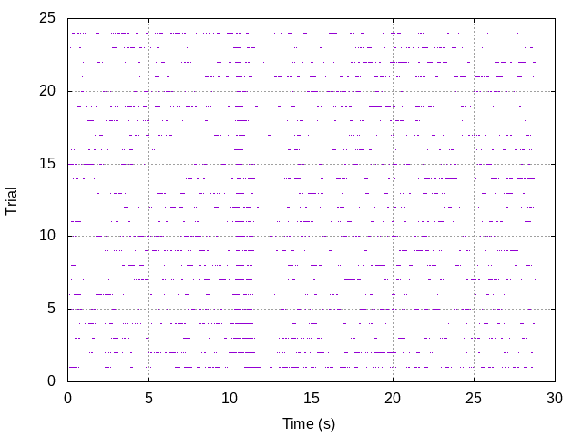

Analyse des séquences de potentiels d'action Tutorial
Table of Contents
1 The idea motivating this development
The idea here is to implement the Unix/Linux "philosophy"–as exposed
for instance in the article of Arnold Robbins
What's GNU–to the
analysis of neuronal spike trains. Since spike trains make not too
voluminous data, they can be stored as text files (ASCII) and most
operations on them can be designed as "filters", that is programs
(usually but not always written in C) that read their input in text
format from the "standard input" (stdin) and send their result in text
format to the "standard output" (stdout). For graphical displays, we
are going to use gnuplot.
2 Required software
The code will be written mostly in C. If you want a clear and quick
introduction to this language, check Ben Klemens:
Modeling With Data.
To compile the code you will need a C compiler like
gcc. If you are using Linux or MacOS it's
in a package from your favorite distribution, if you are using Windows
you will have to install Cygwin. The
heavy computational work is going to be performed mainly by the
gsl (the GNU Scientific Library)
that is easily installed through your package manager (from now on, for
windows users, the "package manager" refers to the one of Cygwin). The
graphs will be generated with gnuplot.
Windows user who want to use the interactive plotting capabilities of
the library (recommended) will also have to install
Cygwin/X.
2.1 Getting and compiling the code
The code is hosted on
GitHub. The easiest is
to clone or download the repository (there is a button for that on the
GitHub page). Once you have the repository on your hard drive, go to the
code sub-directory and type:
make all
This will compile the library libaspa.a as well as a bunch of user
programs all starting with aspa_, like aspa_read_spike_train. As
mentioned previously, you need the gsl to be installed in order to
compile the code.
Once the compilation is done you should move the user programs to one of
the directories listed on your PATH, that is on one of the directories
appearing when you type:
echo $PATH
After that, you're in business.
3 Data used
We are going to use spike trains obtained from the antennal lobe–first
olfactory relay–of locust, Schistocerca americana. These spike trains
can be found on the
zenodo-locust-datasets-analysis
GitHub repository. You can also find there a complete description of the
sorting procedure used to go from the raw data, that are available on
zenodo, to the spike trains. We
will mostly use the spike trains from experiment locust20010214 that
can be found at the following address:
https://github.com/christophe-pouzat/zenodo-locust-datasets-analysis/tree/master/Locust_Analysis_with_R/locust20010214/locust20010214_spike_trains.
3.1 Getting a spike train
We will start by downloading the spike train from unit 1 from group
Spontaneous_1. This is done by typing in the shell (I'm using the
"line continuation character, " to fit my lines on a single page of the
PDF version of this document, when typing directly to the shell you
don't need these line breaks):
wget https://raw.githubusercontent.com/christophe-pouzat/\ zenodo-locust-datasets-analysis/master/Locust_Analysis_with_R/\ locust20010214/locust20010214_spike_trains/\ locust20010214_Spontaneous_1_tetB_u1.txt
This "spike train" contains in fact the result of 30 consecutive continuous acquisitions, each 29 s long with a 1 s gap in between, as is made clear in the detailed sorting description of this data set.
4 Preliminary analysis
4.1 Reading the data
In is not expected that the data (spike trains) one wants to work with
will be obtained in any standard format. That means that a usually
slightly "painful" work will be required (but that's always the case
when dealing with actual data) to read the data and reformat them in the
text (or binary) format used by aspa. Looking at the source code of
aspa_read_spike_train is the way to proceed (more specifically, look
at the code of aspa_raw_fscanf that is called by
aspa_read_spike_train and that is found in aspa_single.c).
The data we just downloaded are collections of spike times in "sample
times"–the time unit is therefore not the second but 1/15000
second–with one spike time per line. This can be seen by calling first
the head function (showing by default the first ten lines of the
file):
head locust20010214_Spontaneous_1_tetB_u1.txt
4364.629 49876.8 50529.95 50988.26 51371.66 51769.29 52703.77 54772.34 56472.7 71766.51
Calling =tail=shows the last lines of the file (by default the last ten lines):
tail locust20010214_Spontaneous_1_tetB_u1.txt
13442792 13455679 13458610 13460049 13460517 13461154 13464139 13470059 13471539 13472243
Function aspa_read_spike_train will read these times from the stdin
and output them in a "nice" format (still a text file by default) to the
stdout. You can get a description to arguments accepted by the
function by calling it with the --help argument:
aspa_read_spike_train --help
That will give you:
Usage: --in_bin: specify binary data input --out_bin: specify binary data output --sample2second <positive real>: the factor by which times in input data are divided in order get spike times in seconds used only when reading 'raw' data (default 15000) --inter_trial_interval <positive real>: the inter trial interval (in s) used only when reading 'raw' data --trial_duration <positive real>: the recorded duration (in s) of each trial used only when reading 'raw' data --stim_onset <real>: the stimulus onset time (in s) if that makes sense, used only when reading 'raw' data --stim_offset <real>: the stimulus offset time (in s) if that makes sense, used only when reading 'raw' data
For demonstration we can call it on the data file we just downloaded\linebreak
(locust20010214_Spontaneous_1_tetB_u1.txt), writing the result into a
new text file locust20010214_Spontaneous_1_tetB_u1.aspa for further
inspection:
aspa_read_spike_train --inter_trial_interval=30 --trial_duration=29 < \ locust20010214_Spontaneous_1_tetB_u1.txt > \ locust20010214_Spontaneous_1_tetB_u1.aspa
We can then look at the first 25 lines of our new file with:
head -n 25 locust20010214_Spontaneous_1_tetB_u1.aspa
# Number of trials: 28 # Number of aggregated trials: 1 # Stimulus onset: 0 (s) # Stimulus offset: 0 (s) # Single trial duration: 29 (s) # Start of trial: 0 # Trial start time: 0 (s) # Number of spikes: 94 0.290975 3.32512 3.36866 3.39922 3.42478 3.45129 3.51358 3.65149 3.76485 4.78443 5.06381 5.11507 5.24077 5.28448 5.31933
We see that the "non-data" element are on lines starting with a "#" character. The "head" of the file specifies how many trial are in the file and gives some other information. The data from trial 0 (we start counting at 0) com next after two blank lines. To see the whole file interactively you can type:
less locust20010214_Spontaneous_1_tetB_u1.aspa
4.2 Basic statistics
Program aspa_mst_fns (mst stands for "multiple spike trains" and
fns for "Five-number summary") return elementary statics related to a spike train data set.
A description of its use is obtained by calling the program with the --help argument:
aspa_mst_fns --help
Usage: --in_bin: specify binary data input Returns five number summary and additional stats.
We can call this function directly on the output of aspa_read_spike_train using a pipe with:
aspa_read_spike_train --inter_trial_interval=30 --trial_duration=29 < \ locust20010214_Spontaneous_1_tetB_u1.txt | \ aspa_mst_fns
Data from 28 trials. The mean rate is: 4.10222 Hz. The inter spike interval statistics are: The sample contains 3303 elements. The mean and SD are : 0.2333 and 0.4660. The median and MAD are: 0.0546 and 0.0359. The five number summary: Min. 1st qrt Median 3rd qrt Max. 0.0157 0.0369 0.0546 0.1491 4.5264 A 95% confidence interval for the lag 1 Spearman rank correlation is: [0.400336,0.443483].
4.3 Basic plots
There are several plots one might want to create at an early stage of spike train data analysis. Since these plots are more "attractive" when built from data with a response to a stimulus, we will start by getting one such case (from the same experiment and same neuron):
wget https://raw.githubusercontent.com/christophe-pouzat/\ zenodo-locust-datasets-analysis/master/Locust_Analysis_with_R/\ locust20010214/locust20010214_spike_trains/\ locust20010214_C3H_1_tetB_u1.txt
This file contains the responses to 25 stimulations with cis-3-hexen-1-ol. The classical way of displaying such data is the raster plot. This plot as well as several over ones we will shortly see is generated by calling aspa_mst_plot. As usual, calling the function with argument --help gives us a basic explanation on how to use it:
aspa_mst_plot --help
Usage: --in_bin: specify binary data input --text: specify text output --what <string>: one of 'raster', 'cp_rt', 'cp_wt', 'cp_norm', the type of plot (see bellow) An interactive lot is generated. If what is set to 'raster' a raster plot is generated. If what is set to 'cp_rt' the observed counting process in 'real' time is generated, that is trial appear one after the other. If what is set to 'cp_wt' the observed counting processes corresponding to each trial are shown on the 'within trial time. If what is set to 'cp_norm' the normalized aggregated counting process is displayed (normalization means here that the step size due to each spike in each trial is 1/number of trials; in a sense the 'mean' counting process is displayed).
4.3.1 Raster plot
Here, to get the classical raster we do:
aspa_read_spike_train --inter_trial_interval=30 --trial_duration=29 < \ locust20010214_C3H_1_tetB_u1.txt | \ aspa_mst_plot --what=raster
This will make a new window appear with a plot similar to the one we will now construct after calling the function with an additional argument:
aspa_read_spike_train --inter_trial_interval=30 --trial_duration=29 < \ locust20010214_C3H_1_tetB_u1.txt | \ aspa_mst_plot --what=raster --text > \ locust20010214_C3H_1_tetB_u1.raster
Here instead of the "new window output" we generated at text output (that's what the --text argument means) sent to the stdout and redirected this stdout to a file called locust20010214_C3H_1_tetB_u1.raster. We can now build "by hand" with gnuplot the same figure as the one we directly got (we have now more control on the output):
set grid unset key set xlabel 'Time (s)' set ylabel 'Trial' plot 'locust20010214_C3H_1_tetB_u1.raster' using 1:2 with dots

4.3.2 A fancy trick
We can also make the raster plot and get the basic stats printed at once with the tee command as follows:
aspa_read_spike_train --inter_trial_interval=30 --trial_duration=29 < \ locust20010214_C3H_1_tetB_u1.txt | tee >(aspa_mst_plot --what=raster) | \ aspa_mst_fns